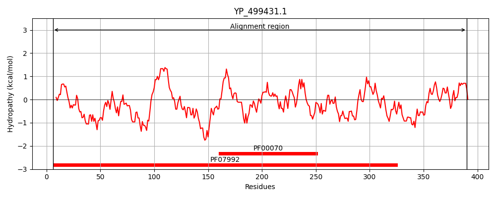
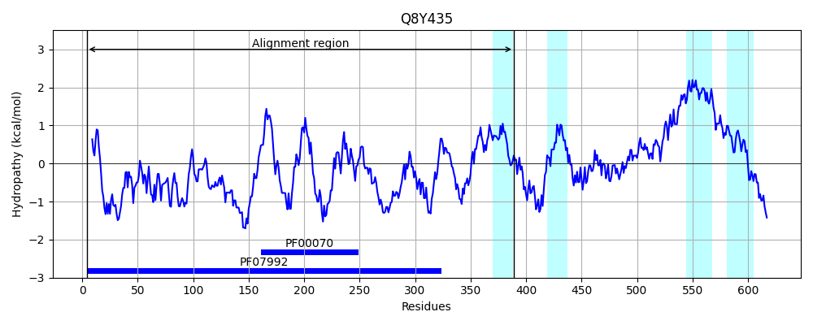
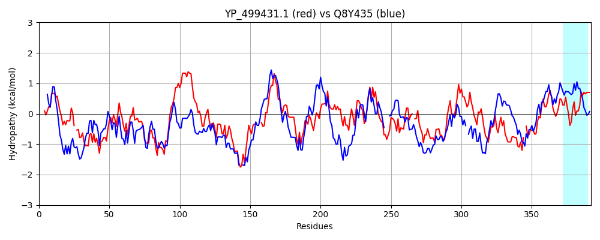

Hit Accession: Q8Y435
Hit TCID: 5.B.14.1.1
Hit Description: gnl|BL_ORD_ID|17057 gnl|TC-DB|Q8Y435|5.B.14.1.1 Lmo2638 protein OS=Listeria monocytogenes serovar 1/2a (strain ATCC BAA-679 / EGD-e) OX=169963 GN=lmo2638 PE=4 SV=1
Mach Len: 392
e:0.000000
Query TMS Count : 0
Hit TMS Count: 4
TMS-Overlap Score: 0.000000
Predicted Substrates:CHEBI:10545;electron
BLAST Alignment:
Score: 463 , Bit scores: 182 bits, E-value: 7.3e-52, Alignment length: 392, Percentage identity: 31
Query: 6 KKVLVLGAGYAGLQTVTKLQKAISTE-EAEITLINKNEYHYEATWLHEASAGTLNYEDVLYPVESVLKKDKVNFVQAEVTKIDRDAKKVETNQGIYDFDILVVALGFVSETFGIEGMKDHAFQIENVITARELSRHIEDKFANYAASKEKDDND----LSILVGGAGFTGVEFLGELTDRIPELCSKYGVDQNKVKITCVEAAPKMLPMFSEELVNHAVSYLEDRGVEFKIATPIVACNEKGFVVEVDGEKQQLNAGTSVWAAGVR-GSKLMEESFEGVKRGRIVTKQDLTINGYDNIFVIGDCSAFIPAGEERPLPTTAQIAMQQGESVAKNIKRILNGESTEE-FEYVDRGTVCSLGSHDGVGMVFGKPIAGKKAAFMKKVIDTRAVFKI 390
K ++++GAGYAG+ KL K + + ITLI+++ YH T LHE + G + + Y + + + KVN V VT +D D K V T G Y FD LV+ +G FG G+ ++ F + + + +L HIE+ AS+E+D L+ +V G+GFTG+E +GEL + L +D +++K+ VEAAP +L M + A Y+ +G+E IV + V++ ++L T +W AGVR S + E + GR+ Q + G +++V+GD A+ E +P P + A Q + AK+I ++G +E F+ G + S+G+ GV + G ++G A MK +++ F I
Sbjct: 4 KNIVLIGAGYAGVHAAKKLAKKYKKDKDVNITLIDRHSYHTMMTELHEVAGGRVEPTAIQYDLRRLFNRTKVNLVTDNVTHVDHDKKVVTTEHGSYPFDYLVLGMGGEPNDFGTPGVGENGFTLWSWEDSVKLRNHIEETVTK--ASREQDVEKRKAMLTFVVCGSGFTGIEMVGELLEWKDRLAKDNKIDASEIKLVVVEAAPTILNMLERRDADKAERYMVKKGIEIMKNAAIVEVKPESIVLK---SGEELPTSTLIWTAGVRANSDTKDYGMESARAGRLKVNQYMEAEGLKDVYVVGDL-AYFEDEEGKPTPQIVEGAEQTALTAAKSIIVEMSGTGEKEPFQGKYHGVMVSIGAKYGVAHLGGMHLSGWFAILMKHMVNLYYFFGI 389 | Protein Hydropathy Plots: |
|---|
|  |  |
Pairwise Alignment-Hydropathy Plot:
|
|---|
|  |